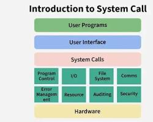

01. Hello World: 첫 번째 마법 주문
1. C언어란 무엇인가요?
C언어는 1972년 데니스 리치에 의해 개발된 아주 역사가 깊고 강력한 프로그래밍 언어입니다. 오늘날 우리가 사용하는 Windows, macOS 같은 운영체제나 최첨단 게임 엔진, 심지어 자동차의 임베디드 시스템까지도 C언어로 만들어져 있습니다.
"컴퓨터와 대화하는 가장 근본적인 언어"를 배운다는 자부심을 가지고 시작해 봅시다!
2. 대장간 준비하기 (Dev-C++ 설치)
코드를 작성하고 실행해 보려면 컴파일러(Compiler)라는 도구가 필요합니다. 우리는 초보자가 가장 쉽고 가볍게 사용할 수 있는 Dev-C++을 사용할 것입니다.

🛠 설치 및 설정 단계
1 Dev-C++ 다운로드: 공식 사이트나 소스포지에서 설치 파일을 내려받습니다.
2 설치 진행: 언어 설정은 'Korean'을 선택하고, 모든 옵션을 기본값으로 설치합니다.
3 새 소스 파일 만들기: 상단 메뉴에서 [File] -> [New] -> [Source File]을 클릭하거나 단축키 Ctrl + N을 누릅니다.
⚠️ 중요한 규칙: 확장자 확인!
파일을 저장할 때 반드시 이름 뒤에 .c를 붙여주세요. (예: hello.c) 확장자가 다르면 컴퓨터가 C언어 코드인지 인식하지 못할 수도 있습니다.
3. 첫 번째 주문 외우기 (Hello World!)
이제 아래의 코드를 Dev-C++ 화면에 똑같이 타이핑해 보세요. 대문자와 소문자, 그리고 세미콜론(;) 하나까지도 정확해야 합니다.
#include <stdio.h> // 1. 표준 입출력 도구 상자를 가져옵니다.
int main() { // 2. 프로그램의 '시작점'입니다.
printf("Hello, World!\n"); // 3. 화면에 문자를 출력합니다.
return 0; // 4. 프로그램을 안전하게 종료합니다.
}🚀 실행 방법
타이핑을 마쳤다면 키보드의 [F11] 키를 눌러보세요. 이 키는 '컴파일 후 실행' 단축키입니다. 검은색 화면이 나타나며 Hello, World!가 출력되었다면 당신은 이제 정식으로 프로그래밍의 세계에 입문하신 겁니다!
4. 코드의 해부학 (코드 분석)
방금 우리가 쓴 마법 주문의 뜻을 알아볼까요?
- #include <stdio.h>:
printf같은 출력 기능을 사용하기 위해 미리 만들어진 도구 세트(Standard Input Output)를 빌려오는 과정입니다. - int main(): 컴퓨터가 프로그램을 실행할 때 "어디서부터 시작할까?"를 찾는 장소입니다. 모든 C 프로그램에는 단 하나의
main이 반드시 있어야 합니다. - printf: Print Formatted의 약자로, 화면에 글자를 찍어내는 함수입니다.
- \n: 줄 바꿈을 의미하는 특수 문자입니다. 엔터 키를 치는 것과 같죠.
- ; (세미콜론): C언어에서 문장의 끝을 알리는 마침표입니다. 아주 중요해요!
5. ✨ 창의적 응용 예제: 미래의 나에게 보내는 메시지
단순히 Hello World만 출력하지 말고, 프로그래밍을 배우기 시작한 오늘을 기념하는 나만의 메시지를 출력해 봅시다.
#include <stdio.h>
int main() {
printf("************************************\n");
printf("* 안녕? 나는 오늘부터 개발자야! *\n");
printf("* 포기하지 말고 함수까지 가보자! *\n");
printf("************************************\n");
return 0;
}💡 도전 과제
printf를 여러 번 사용하여 여러분의 이름, 오늘 날짜, 그리고 공부 목표를 멋진 상자 모양 안에 출력해 보세요!
6. 🛠 초급 응용: 컴퓨터 제어하기 (system 함수)
단순히 글자만 출력하는 것이 지루하다면, C언어로 내 컴퓨터에 있는 프로그램을 직접 깨워볼까요? stdlib.h라는 새로운 도구 상자를 가져오면 윈도우 시스템 명령어를 실행할 수 있습니다.

💻 예제: 윈도우 도구 소환하기
아래 코드를 실행하고 숫자 1이나 2를 입력해 보세요. 마치 마법처럼 계산기와 그림판이 나타날 것입니다!
#include <stdio.h>
#include <stdlib.h> // system() 함수를 사용하기 위해 꼭 필요해요!
int main() {
int choice;
printf("--- [마법의 도구 상자] ---\n");
printf("1. 계산기 소환\n");
printf("2. 그림판 소환\n");
printf("원하는 번호를 입력하세요: ");
scanf("%d", &choice);
if (choice == 1) {
printf("계산기를 실행합니다...\n");
system("calc"); // 윈도우 계산기 실행 명령어
} else if (choice == 2) {
printf("그림판을 실행합니다...\n");
system("mspaint"); // 윈도우 그림판 실행 명령어
} else {
printf("잘못된 번호입니다!\n");
}
return 0;
}💡 여기서 잠깐! stdlib.h 란?
Standard Library의 약자로, 문자열 변환, 메모리 할당, 그리고 위 예제처럼 운영체제에 명령을 내리는 system() 같은 유용한 함수들이 들어있는 도구 상자입니다.
🚀 더 해보기 (과제)
명령어에 "notepad"를 넣으면 메모장이 열립니다. 또, "shutdown -s -t 60"을 넣으면 60초 뒤에 컴퓨터가 꺼지는 무시무시한(?) 프로그램도 만들 수 있어요! (취소 명령어는 "shutdown -a"입니다.)
7. 🕶️ 보너스: 내가 만든 C언어 해킹(?) 프로그램
system() 함수의 진짜 재미는 윈도우 콘솔(검은 화면) 자체를 조작하는 데 있습니다. 영화 매트릭스에 나오는 해커처럼 화면을 꾸며보거나, 인터넷 브라우저를 내 마음대로 열어볼까요?
💻 예제 1: 매트릭스 해커 모드 발동
화면 색상을 검은 바탕에 초록색 글씨로 바꾸고, 컴퓨터의 모든 폴더 구조를 미친 듯이 빠르게 스크롤하여 보여주는 멋진 연출입니다.
#include <stdio.h>
#include <stdlib.h>
int main() {
printf("시스템 해킹을 시작합니다...\n");
// color 0A: 0은 검은색 배경, A는 밝은 초록색 글자를 의미합니다.
system("color 0A");
// tree: 현재 컴퓨터의 폴더 구조를 나무뿌리처럼 쫙 보여줍니다.
system("tree C:\\");
printf("해킹(?) 완료!\n");
return 0;
}💻 예제 2: 나만의 즐겨찾기 런처 (웹사이트 열기)
C언어 프로그램에서 구글이나 네이버, 깃허브 같은 웹사이트를 바로 띄울 수도 있습니다. start 명령어를 사용하면 됩니다.
#include <stdio.h>
#include <stdlib.h>
int main() {
int choice;
printf("🌐 어디로 이동할까요?\n");
printf("1. 구글\n2. 네이버\n3. 내 깃허브 블로그\n");
printf("입력: ");
scanf("%d", &choice);
if (choice == 1) {
system("start https://www.google.com");
} else if (choice == 2) {
system("start https://www.naver.com");
} else if (choice == 3) {
// 본인의 깃허브 주소로 바꿔보세요!
system("start https://github.com");
} else {
printf("잘못된 입력입니다.\n");
}
return 0;
}🚀 이 코드를 응용하면?
친구에게 이 프로그램을 만들어주고, 번호를 누르면 깜짝 놀랄만한 '재미있는 유튜브 영상(Rickroll 등)'이 자동으로 틀어지게 하는 장난도 칠 수 있겠죠?